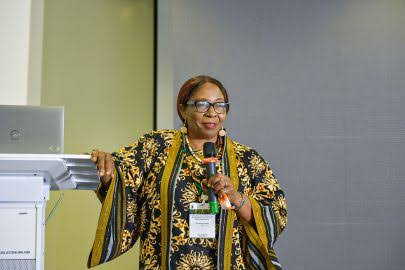
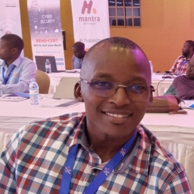
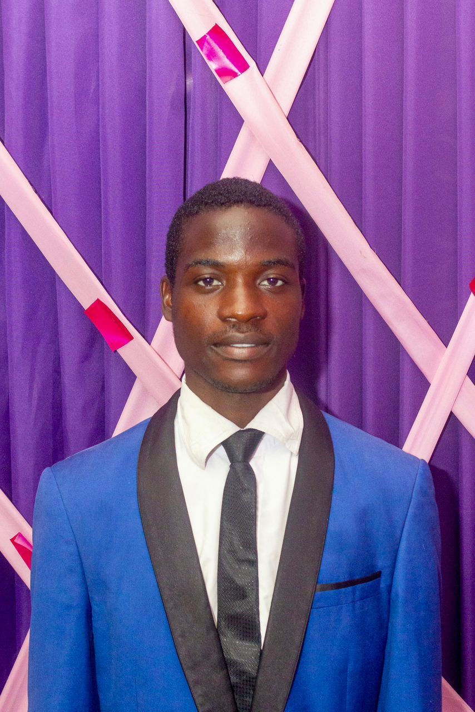
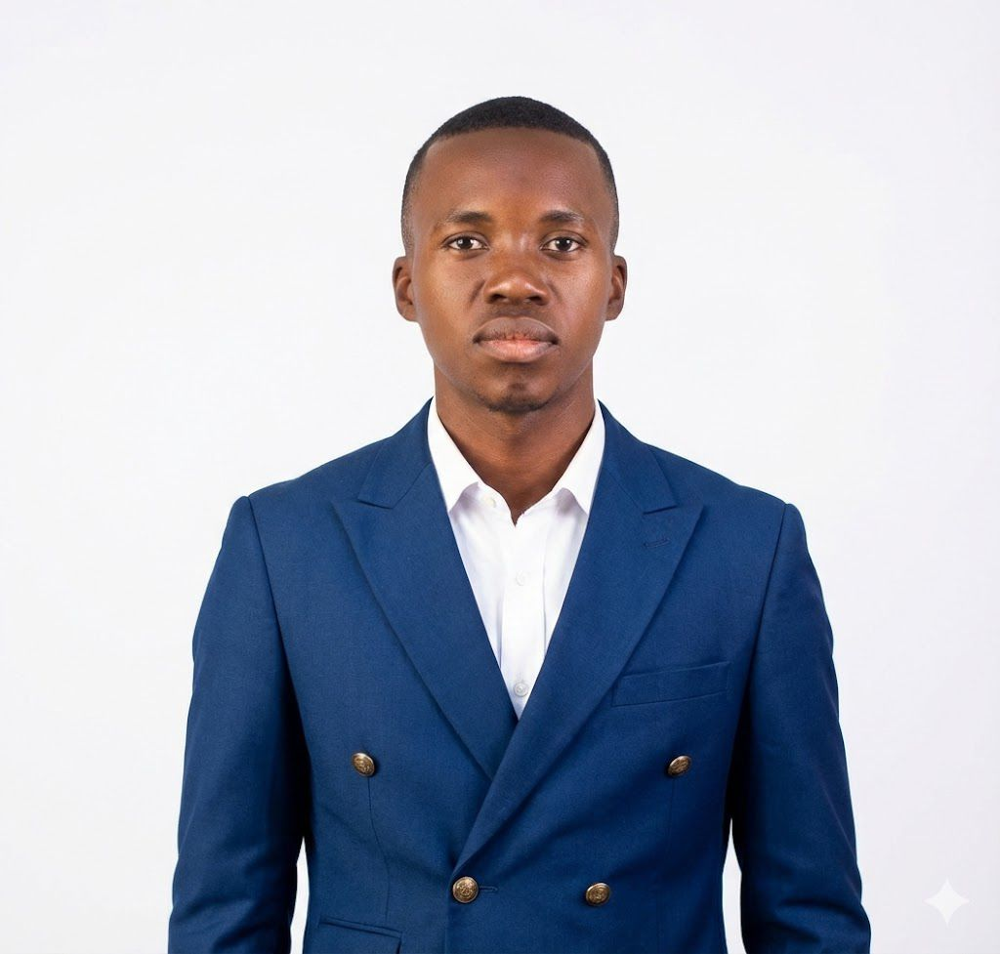
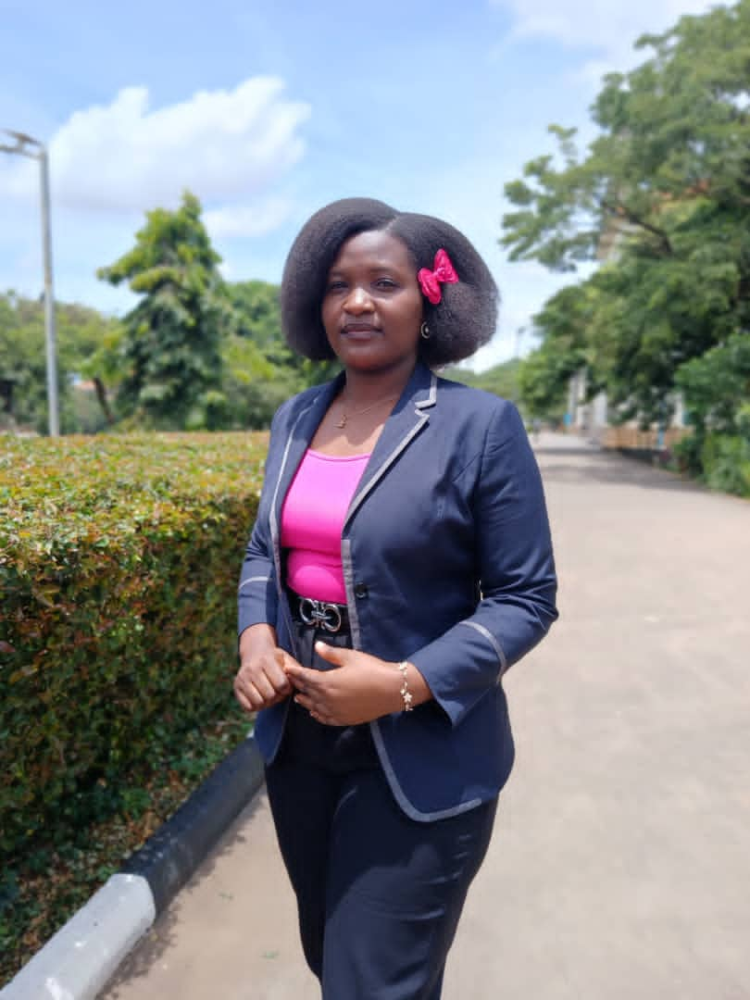
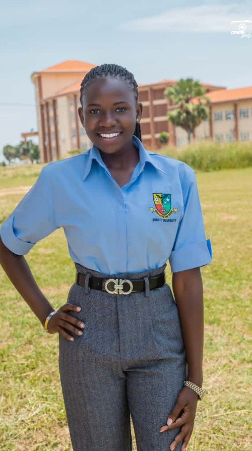
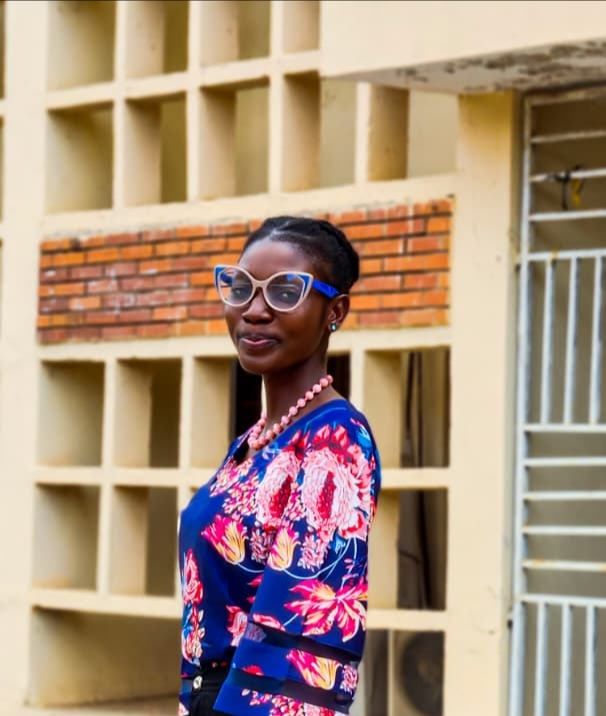
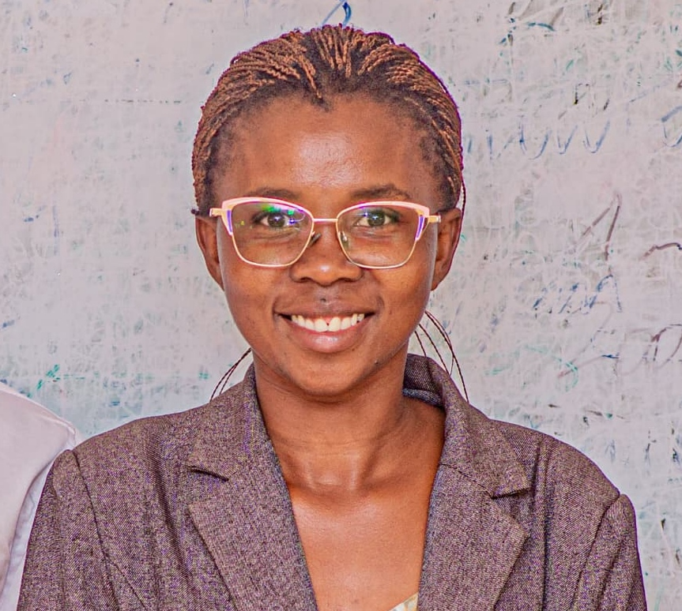

PROJECT COACH
Prof. Achike Anthonia Ifeyinwa
Thank you for your mentorship and project guidance.
Team Avoglow sincerely appreciates the coaching, support and practical insight that made this work possible.

Thank you for your mentorship and project guidance.

Thank you for your technical guidance and support.

Thank you for welcoming the team into Atari Farms and sharing the Avoglow story.
A multidisciplinary student crew bringing research, design and engineering together.





